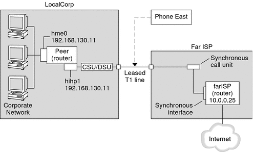

|
|||||||||||||||
|
Part I Network Services Topics Part II Accessing Network File Systems Topics 4. Managing Network File Systems (Overview) 5. Network File System Administration (Tasks) 6. Accessing Network File Systems (Reference) 8. Planning and Enabling SLP (Tasks) 10. Incorporating Legacy Services Part V Serial Networking Topics 15. Solaris PPP 4.0 (Overview) 16. Planning for the PPP Link (Tasks) Overall PPP Planning (Task Map) Planning for Authentication on a Link Planning for DSL Support Over a PPPoE Tunnel 17. Setting Up a Dial-up PPP Link (Tasks) 18. Setting Up a Leased-Line PPP Link (Tasks) 19. Setting Up PPP Authentication (Tasks) 20. Setting Up a PPPoE Tunnel (Tasks) 21. Fixing Common PPP Problems (Tasks) 22. Solaris PPP 4.0 (Reference) 23. Migrating From Asynchronous Solaris PPP to Solaris PPP 4.0 (Tasks) 25. Administering UUCP (Tasks) Part VI Working With Remote Systems Topics 27. Working With Remote Systems (Overview) 28. Administering the FTP Server (Tasks) 29. Accessing Remote Systems (Tasks) Part VII Monitoring Network Services Topics |
Planning a Leased-Line LinkSetting up a leased-line link involves configuring the peer at one end of a switched or unswitched service that is leased from a provider. This section includes the following information:
For an introduction to leased-line links, refer to Leased-Line PPP Overview. For tasks about setting up the leased line, see Chapter 18, Setting Up a Leased-Line PPP Link (Tasks). Before You Set Up the Leased-Line LinkWhen your company rents a leased-line link from a network provider, you typically configure only the system at your end of the link. The peer at the other end of the link is maintained by another administrator. This individual might be a system administrator at a remote location in your company or a system administrator at an ISP. Hardware That Is Needed for a Leased-Line LinkIn addition to the link media, your end of the link requires the following hardware:
Some network providers include a router, synchronous interface, and a CSU/DSU as part of the customer premises equipment (CPE). However, necessary equipment varies, based on the provider and any governmental restrictions in your locale. The network provider can give you information about the unit that is needed, if this equipment is not provided with the leased line. Information to Be Gathered for the Leased-Line LinkBefore you configure the local peer, you might need to gather the items that are listed in the next table. Table 16-4 Planning for a Leased-Line Link
Example of a Configuration for a Leased-Line LinkThe tasks in Chapter 18, Setting Up a Leased-Line PPP Link (Tasks) show how to implement the goal of a medium-sized organization (LocalCorp) to provide Internet access for its employees. Currently, the employees' computers are connected on a private corporate intranet. LocalCorp requires speedy transactions and access to the many resources on the Internet. The organization signs a contract with Far ISP, a service provider, which allows LocalCorp to set up its own leased line to Far ISP. Then, LocalCorp leases a T1 line from Phone East, a telephone company. Phone East puts in the leased line between LocalCorp and Far ISP. Then, Phone East provides a CSU/DSU that is already configured to LocalCorp. The tasks set up a leased-line link with the following characteristics.
Figure 16-2 Example of a Leased-Line ConfigurationIn the figure, a router is set up for PPP at LocalCorp. The router connects to the corporate Intranet through its hme0 interface. The second connection is through the machine's HSI/P interface (hihp1) to the CSU/DSU digital unit. The CSU/DSU then connects to the installed leased line. The administrator at LocalCorp configures the HSI/P interface and PPP files. The administrator then types /etc/init.d/pppd to initiate the link between LocalCorp and Far ISP. Where to Go for More Information About Leased LinesRefer to the following: |
||||||||||||||
|